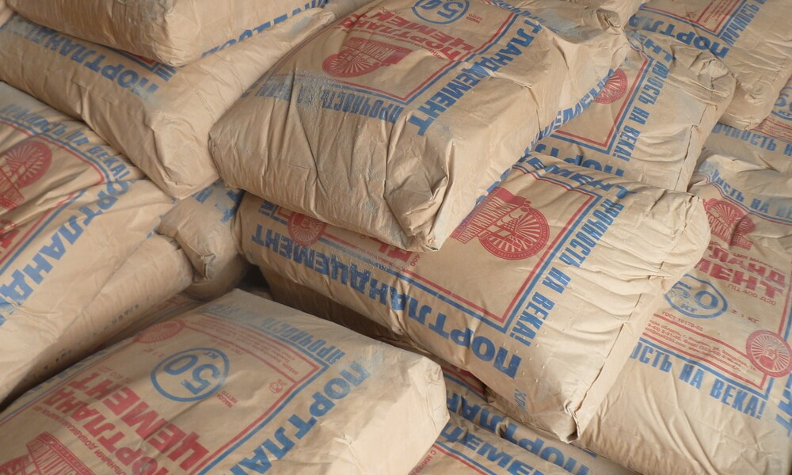
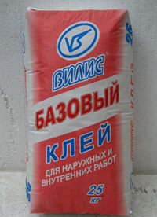
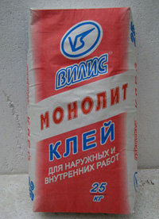
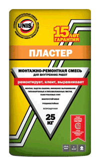
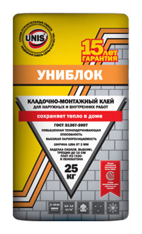
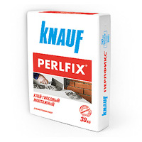
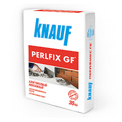
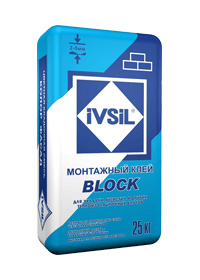
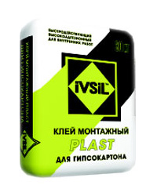
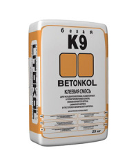

Клеи для блоков , их марки и применение

Клей для блоков и плит из ячеистого бетона «ВИЛИС-Базовый»
 |
Описание:
«ВИЛИС-Базовый» — это сухая смесь на основе цемента, фракционированного песка и специального комплекса химических добавок, улучшающих технические характеристики клеевого состава.
Область применения:
«ВИЛИС-Базовый» применяется для укладки пенобетонных блоков, блоков из ячеистого бетона и пазогребниевых плит. Рекомендуется для внутренних и наружных работ.
Технические характеристики:
Марка прочности — 15 МПа (М-150)
Время исправления положения плитки — 5 — 20 мин.
Контактная площадь — не менее 65%
Полная прочность кладки — через 28 дней
Температура основания — от +5°С до +35°С
Изготовлено из экологически чистого сырья.
Имеется сертификат соответствия и гигиенический сертификат.
Требования к основанию и способ применения:
Основание (поверхность блока) должно быть обеспыленным, плотным, обладающим достаточными несущими способностями, очищенным от грязи, пыли, краски, жирных и масляных пятен. Для улучшения сцепления рекомендуется поверхность блоков смачивать водой.
Сухую смесь засыпать в чистую воду, постоянно перемешивая (вручную или с применением электродрели с насадкой) до получения однородной массы, дать отстояться и перемешать ещё раз. Количество воды затворения указывается в паспорте на готовую продукцию. Смесь пригодна для работы через 5 мин.
Клеевой раствор наносится на поверхность блока и выравнивается зубчатым шпателем или специальной кельмой с зубчатой кромкой.
Расход материала:
3,0 — 4,0 кг сухой смеси на 1 м2 при толщине слоя раствора 3 мм.
Упаковка:
Бумажные мешки по 25 кг.
Клей для укладки тяжелых плит ВИЛИС-Монолит |
Описание:
ВИЛИС-Монолит — это сухая смесь на основе мелкозернистого бетона с добавлением комплекса химических добавок. Клеевой раствор морозостойкий, что позволяет применять его, как для внутренних, так и для наружных работ.
Область применения:
Клеевой раствор ВИЛИС-Монолит подходит для укладки тяжелых напольных, каменных плит, тротуарных блоков, используется для облицовки тяжелыми плитами цоколей зданий. Также применяется для устройства высокопрочных стяжек.
Технические характеристики:
Марка прочности 30 МПа (М-300)
Морозостойкость не менее 100 циклов
Оптимальная толщина слоя 15 — 20 мм
Жизнеспособность раствора не менее 1,5 часа
Время исправления положения плит 20 мин.
Температура применения Не ниже +5°С
Изготовлено из экологически чистого сырья.
Имеется сертификат соответствия и гигиенический сертификат.
Требования к основанию и способ применения:
Перед началом плиточных работ поверхность очищается от пыли, грязи, краски, масляных пятен, отслаивающихся элементов, хорошо смачивается водой или обрабатывается грунтовкой глубокого проникновения.
Сухую смесь засыпать в чистую воду, постоянно перемешивая (вручную или с применением электродрели с насадкой) до получения однородной массы, дать отстояться и перемешать ещё раз. Количество воды затворения указывается в паспорте на готовую продукцию. Смесь пригодна для работы через 5 мин.
Максимальная толщина слоя за один проход — 20 мм.
Расход материала:
15 — 20 кг сухой смеси на 1 м2 (зависит от свойств основания, плит) при толщине слоя раствора 15 мм.
Упаковка:
Бумажные мешки по 25 кг.
Пластер |
Гипсовая монтажно-ремонтная смесь
приклеивание ГВЛ, ГКЛ; монтаж пазогребневых плит (ПГП)
заделка стыков ГКЛ, ГВЛ, ПГП с использованием армирующей ленты
заделка трещин, выбоин, сколов ГВЛ, ГКЛ и пазогребневых плит; восстановление фрагментов любой поверхности внутренних помещений
выравнивание потолочных рустов без армирующей ленты
проведение финишного выравнивания мелких дефектов основания (шпатлевания)
Применяется внутри отапливаемых помещений с нормальной влажностью.
Виброустойчивая
Трещиностойкая
Безусадочная
Свойства:
За счет уникальной рецептуры и сочетания в материале широкого диапазона улучшенных технико-эксплуатационных свойств монтажно-ремонтная смесь «Пластер» является универсальным материалом с широкой областью применения: ремонт различных поверхностей, приклеивание листов ГКЛ и ГВЛ, базовое и финишное выравнивание оснований.
Гипсовая монтажно-ремонтная смесь «Пластер» обладает паропроницаемостью, является экологически безвредным материалом, т.к. не выделяет вредных для здоровья человека и окружающей среды веществ при производстве работ и в эксплуатации, способствует созданию благоприятного микроклимата в помещении.
Усиленная фиброволокнами смесь «Пластер» обладает виброустойчивостью, трещиностойкостью, безусадочностью, что гарантирует получение надежного результата при проведении работ, а также долговременное сохранение качества получаемой поверхности.
Высокая клеящая способность и прочность материала обуславливает высокое качество и способствуют продлению срока службы восстановленных с помощью «Пластера» поверхностей.
Пластичность готового раствора значительно снижает трудозатраты при проведении шпатлевочных работ: раствор легко наносится, разравнивается и заглаживается.
Рекомендованные основания:
Применяется по гипсовым, бетонным, пенобетонным, цементно-песчаным, газосиликатным и другим недеформирующимся основаниям.
Выполнение работ:
При проведении работ, а также в течение срока высыхания раствора следует соблюдать температуру воздуха в помещении в пределах от +5 до +30°С и уровень влажности воздуха не более 75%.
Подготовка основанияОснование должно быть прочным, сухим, обладать несущей способностью. Перед нанесением материала необходимо удалить с поверхности осыпающиеся элементы, малярные покрытия, масляные, битумные пятна и другие загрязнения, препятствующие сцеплению материала с поверхностью.
Для усиления прочности сцепления материала с основанием необходимо обработать поверхность грунтовкой UNIS в один-два слоя, а неравномерно и сильно впитывающие основания в несколько слоев. Выбор грунтовки UNIS осуществляется в соответствии с типом основания. Не следует допускать запыления загрунтованных поверхностей.
Приготовление раствораДля приготовления раствора сухую смесь засыпать в емкость с чистой водой (на 1 кг сухой смеси
Внимание! При приготовлении раствора необходимо соблюдать соотношение «сухая смесь-вода». Не допускается добавление в сухую смесь любых компонентов, кроме воды. Добавление в уже готовый раствор любых компонентов, в том числе воды, ведёт к изменению заявленных производителем свойств материала. Для приготовления раствора использовать только чистые емкости и инструмент.
Приклеивание ГВЛ, ГКЛ к поверхностиГипсокартонные листы следует наклеивать так, чтобы они находились над поверхностью пола на расстоянии
При неровностях поверхности до 5 мм готовый раствор наносят на поверхность с помощью зубчатого шпателя и плотно прижимают монтируемые листы к стене, корректируя их легкими ударами резинового молотка и выравнивая с помощью уровня и правила.
При неровностях поверхности
от 5 до 20 мм готовый раствор наносят
порциями-лепешками (примерно одна кельма) по периметру листа через
При неровностях поверхности более 20 мм по периметру примыкания листа к поверхности с помощью готового раствора наклеиваются полосы-маяки ГКЛ/ГВЛ шириной 10 см и дополнительно, сверху вниз по центру две полосы. Монтируемые листы плотно прижимают к стене, корректируя их легкими ударами резинового молотка и выравнивая с помощью уровня и правила.
Заделка стыков ГКЛ, ГВЛ производится через сутки после монтажа.
Заделка швов ГКЛ, ГВЛ, ПГПЗаделку швов ГКЛ, ГВЛ, ПГП следует осуществлять с использованием армирующей ленты. Кромку ГКЛ, ГВЛ, ПГП в месте стыка подрезать под углом 45° с каждой стороны. На нанесенный первый слой смеси «Пластер» укладывают армирующую ленту и вдавливают ее шпателем в раствор. Затем, после высыхания первого слоя, наносят выравнивающий слой шпатлевки. Шпатлевание поверхности производится через сутки после заделки стыков.
Монтаж пазогребневых плитВ соответствии с общими правилами проведения работ по монтажу пазогребневых плит (см. инструкции производителей) готовый раствор «Пластер» равномерно наносится в пазогребневое пространство с помощью мастерка или шпателя.
При необходимости после окончания работ
по возведению перегородок удалить с поверхности выступы,
и провести сплошное шпатлевание. При наличии на поверхности
впадин заделать их с помощью раствора «Пластер». Стыки ПГП
заделываются смесью «Пластер». Дальнейшие работы (оштукатуривание,
шпатлевание) производятся спустя
При частичном повреждении листа ГКЛ, ГВЛ необходимо вырезать подходящий по размерам кусок или использовать сохранившийся фрагмент отколовшейся части гипсо-листа. Раствор «Пластер» нанести на место скола ремонтируемого гипсо-листа и крепко приклеить к нему подобранный фрагмент. Применяется только при приклеивании к стене.
Ремонт заделка выбоин, пробоин, восстановление бетонных, кирпичных, цементо-песчаных, газосиликатных оснований и пенобетоновМонтажно-ремонтная смесь «Пластер» используется для заделки глубоких (до 50 мм) впадин, выбоин, трещин. Для этого готовым раствором заполняют выбоину и заглаживают шпателем по поверхности. В зависимости от слоя нанесения дальнейшую обработку поверхности можно проводить после высыхания раствора. Время высыхания раствора указано при условии температуры основания и окружающей среды 22°С, влажности воздуха не более 65% в проветриваемом помещении.
В процессе высыхания раствора не использовать принудительную сушку.
| Слой нанесения | Время высыхания |
|---|---|
Время высыхания раствора указано при условии температуры основания и окружающей среды 22°С, влажности воздуха не более 65% в проветриваемом помещении. В процессе высыхания раствора не использовать принудительную сушку.
Шпатлевание поверхностиНебольшую порцию приготовленного раствора при помощи шпателя нанести на обрабатываемую поверхность. Удерживая шпатель под углом к основанию с сильным нажимом тщательно размазать раствор по поверхности вертикальными или горизонтальными движениями до получения необходимого слоя.
В случае необходимости смесь «Пластер» может наноситься
в несколько слоев. Вторичное нанесение возможно только после
полного высыхания предыдущего слоя. Время высыхания слоя шпатлевки
толщиной
Перед отделкой поверхности декоративным покрытием зашпатлеванную поверхность необходимо зачистить шкуркой-«нулевкой» или теркой и обеспылить. Подготовленная поверхность пригодна для оклейки обоями. Для получения идеально гладкого основания после полного высыхания поверхности рекомендуется нанести слой финишной тонкослойной мелкофракционной шпатлевки, например: «Слайд», «Крон», «KR» или «LR».
 |
Кладочно — монтажный клей
Кладочно — монтажный клей УНИБЛОК для наружных и внутренних работ предназначен для кладки стен и перегородок из блоков и плит на основе ячеистых бетонов (пенобетона и газобетона), газосиликата, силикатных блоков, и плит.
Возможно использования клея при заделке сколов и выбоин плит из газо- и пенобетона до 10 см.
Свойства:
Кладочно — монтажный клей «УНИБЛОК» обладает теплоизоляционными свойствами, приближенными к характеристикам ячеистых бетонов, что в сочетании с тонким швом (ширина шва от 3мм) позволяет исключить промерзание стены и потери тепла через швы кладки.
«УНИБЛОК» сохраняет свои свойства при прямом контакте с водой и воздействии отрицательных температур. Пластичность готового раствора делает клей удобным в работе.
«УНИБЛОК» является экологически безвредным материалом, т.к. не выделяет опасных для здоровья человека и окружающей среды веществ при производстве работ и в эксплуатации.
Может быть использован для выравнивания поверхности с перепадами до 10 мм.
Рекомендованные основания:
Работы следует проводить в сухих условиях, при температуре воздуха +5...+35оС и относительной влажности воздуха не более 95%.
Выполнение работ:
При проведении работ, а также в течение срока высыхания раствора следует соблюдать температуру воздуха в помещении в пределах от +5 до +30°С и уровень влажности воздуха не более 75%.
Подготовка основанияПоверхность блока должна быть сухой, прочной, тщательно обеспыленной, очищенной от грязи, масляных и битумных пятен, и других загрязнений, препятствующих сцеплению материала с поверхностью.
Металлические детали должны быть обработаны антикоррозийным раствором.
Для повышения прочности сцепления бетонное основание перед первым рядом кладки блоков необходимо обработать подходящим к данному типу основания грунтом компании Юнис в один- два слоя.; неравномерно и сильно впитывающие основания (газосиликат, пенобетон и т.д.) в несколько слоев.
Приготовление раствораДля приготовления раствора следует использовать только чистые емкости и инструмент.
Сухую смесь необходимо засыпать в подготовленную емкость с чистой водой (из расчета 0,22...0,23 л на 1 кг сухой смеси) и перемешивать до получения однородной массы в течение 3...5 минут.
Дать раствору отстояться 3...5 минут и повторно размешать. Перемешивание производится ручным или механизированным способами (профессиональным миксером или дрелью с насадкой на малых оборотах). Ручное перемешивание допускается при массе затворяемой смеси не более 1кг. Приготовленная порция раствора должна быть израсходована в течение 120 минут.
Внимание! При приготовлении раствора необходимо соблюдать соотношение «сухая смесь-вода».
Не допускается добавление в сухую смесь любых компонентов, кроме воды. Добавление в уже готовый раствор любых компонентов, в том числе воды, ведёт к изменению заявленным производителем свойств материала. При загустевании раствора в ёмкости (в пределах времени жизнеспособности), необходимо тщательно перемешивать его без добавления воды.
Нанесение материалаПеред укладкой первого ряда блоков необходимо тщательно выровнять базовую поверхность раствором по уровню горизонта. Для этого на фундамент наносится готовый клеевой раствор толщиной до 10 мм.
При укладке второго и последующего рядов блоков клей на блоки наносится полосой, соответствующей ширине блока.
Рекомендуемый слой нанесения составляет 5...10 мм в зависимости от точки изготовления (геометрии) блоков. При работе с беспазовыми блоками раствор также наносится и на вертикальные плоскости.
Время укладки блоков не более 25 минут после
нанесения раствора. После укладки блок или плиту следует прижать так,
чтобы толщина шва после прижатия составила 3-5мм. Корректировку
положения блоков необходимо проводить в течении
Второй и все последующие ряды кладки пеноблоков выполняются с перевязкой (стыковой шов должен проходить не менее чем в 10см от места нахождения стыкового шва предыдущего ряда).
Несущие стены перевязываются кладкой или стыковка выполняется с помощью анкеров.
Проведение дальнейших строительных работ по кладке возможно через трое суток.
 |
Сухая монтажная смесь на основе гипса с полимерными добавками, обеспечивающими повышенную адгезию.
Гипсовые сухие смеси могут быть различного цвета, от белого до серого и даже до розового. Это объясняется наличием природных примесей в гипсовом камне.
Цвет смеси никак не влияет на ее характеристики.
Область применения:
Предназначен для приклеивания гипсокартонных КНАУФ-листов (ГКЛ), гипсовых комбинированных панелей (ГКП), изоляционных материалов (пенополистирольных и минераловатных плит) на кирпичные, бетонные, оштукатуренные основания стен с неровной поверхностью.
Применяется для внутренних работ.
Преимущества:
- Быстрое выравнивание поверхности стен с помощью КНАУФ — листов без установки несущего каркаса.
- Применение клея КНАУФ-Перлфикс позволяет снизить потери площади помещения при облицовке стен.
- Материал изготовлен из экологически чистого природного минерала (гипса) и не содержит вредных для здоровья человека веществ.
 |
Сухая монтажная смесь на основе гипса с полимерными добавками, обеспечивающими повышенную адгезию.
Гипсовые сухие смеси могут быть различного цвета, от белого до серого и даже до розового. Это объясняется наличием природных примесей в гипсовом камне.
Цвет смеси никак не влияет на ее характеристики.
Область применения:
Для приклеивания гипсоволокнистых КНАУФ-суперлистов (ГВЛ, ГВЛВ), изоляционного материала (минеральная вата, пенополистирол) на кирпичные, бетонные, оштукатуренные, поробетонные основания стен с неровной поверхностью.
Применяется для внутренних работ.
Преимущества:
- Быстрое выравнивание поверхности стен с помощью КНАУФ-суперлистов без установки несущего каркаса.
- Применение клея КНАУФ-Перлфикс ГВ позволяет снизить потери площади помещения при облицовке стен.
- Материал изготовлен из экологически чистого природного минерала (гипса) и не содержит вредных для здоровья человека веществ.
 |
Монтажный клей для пеноблоков и газоблоков ИВСИЛ БЛОК, клей для пенобетона на основе цемента, импортных полимерных добавок и фракционированного песка. Предназначен для укладки пазовых и беспазовых блоков и плит из газобетона, пенобетона, полистиролбетона, силиката, для кладки пеноблоков, ячеистых блоков, блоков из ячеистого бетона, поробетона и для кладки других, точных по размеру теплоизоляционных кладочных материалов. Для внутренних и наружных работ.
Клей для газобетона позволяет укладывать блоки и плиты с минимальной шириной шва в 2 мм, что исключает промерзание стены через кладочный шов, предотвращая образование так называемых «мостиков холода». Тонкий слой нанесения клея для газобетона обеспечивает минимальный расход материала, позволяет укладывать газо- и пенобетонные блоки надежнее, значительно быстрее и даже ВЫГОДНЕЕ (экономия до 50%), чем обычной недорогой кладочной цементно-песчаной смесью.
Высокая пластичность раствора обеспечивает удобство в работе.
Входящие в состав водоудерживающие добавки позволяют долго
сохранять клеющую способность уже нанесенного на блоки клея
(открытое время работы в
Подготовка основания:
Поверхность блоков должна быть тщательно обеспыленной, крепкой, очищенной от грязи, пыли, масел, жиров.
Приготовление раствора:
Приготавливается клей для газобетона следующим
образом: сухую смесь высыпать в емкость с чистой водой
из расчета 1 кг сухой смеси на
Применение:
При укладке беспазовых блоков и плит клеевой
раствор наносится на вертикальные и горизонтальные монтажные
плоскости. Готовый клей для пенобетона нанести на подготовленную
поверхность блока или плиты и разровнять зубчатым шпателем.
Ненесение на вертикальные поверхности рекомендуется производить при
помощи специальной кельмы — ковша. После укладки блоков или плит
их следует прижать друг к другу поворотными движениями для
достижения оптимальной толщины клеевого слоя
Расход:
Средний расход
 |
Монтажный клей для гипсокартона IVSIL PLAST на основе гипсового вяжущего с комплексом полимерных добавок. Клей используется при выравнивании стен гипсокартоном и предназначен для монтажа гипсокартонных листов (ГКЛ), гипсоволокнистых листов и плит (ГВЛ), пенополистирольных и минераловатных плит на оштукатуренные, бетонные, газобетонные, кирпичные основания без использования дополнительных механических креплений.
В отличие от монтажа ГКЛ по направляющим, клей для гипсокартона требует минимальных навыков, позволяет производить выравнивание стен гипсокартоном у себя в квартире своими руками в кратчайшие сроки. Благодаря высокой клеющей способности не требует сплошного нанесения на листы гипсокартона, одновременно обеспечивая низкий расход клея на квадратный метр поверхности.
Монтажный клей для гипсокартона может также применяться как клей для монтажа пазогребневых плит для внутренних работ и как материал для заделки стыковых швов гипсокартона. Заделка швов гипсокартона при помощи монтажного клея IVSIL PLAST может производиться без использония армирующей ленты — серпянки.
Внимание! Монтаж гипсокартона при помощи клея ИВСИЛ ПЛАСТ рекомендуется производить в помещениях с необходимыми углами и стенами, не имеющих значительных отклонений по вертикали. В противном случае, для одновременной коррекции вертикальной поверхности стен и углов помещения рекомендуется использовать традиционную систему монтажа гипсокартона при помощи направляющих.
Подготовка основания:
Приклеивание гипсокартона производится на сухое, прочное, очищенное от пыли, грязи, масел, остатков старой штукатурки и краски основание. Сильно впитывающие основания необходимо обработать грунтовкой IVSIL БАЗОВАЯ.
Приготовление раствора:
Сухую смесь высыпать в емкость с чистой водой в соотношении 0,35 — 0,4 л воды на 1 кг сухой смеси и тщательно перемешать ручным либо механическим способом до получения однородной пастообразной массы. Готовый клеевой раствор выдержать в течение 5 минут и снова перемешать. Приготовленный клей для гипсокартона рекомендуется использовать в течение 30 минут.
Применение:
Приклеивание ГКЛ, ГВЛ: Готовый клей для гипсокартона нанести на горизонтально уложенный лист порциями (одна кельма) вдоль листа в один ряд по центру с интервалом 30 — 40 см и по периметру с более частым интервалом, чтобы исключить возможность изгиба плит в местах их соединения.
При помощи двух человек плиту поднять и плотно прижать к основанию, затем откорректировать ее положение легкими ударами через планку в течение 10 — 15 минут после нанесения клеевого раствора. Если неровности основания превышают 2 см, то его выравнивают путем приклеивания вертикальных полосок из плиты шириной 10 см через каждые 60 см и двух горизонтальных полосок на высоте верхнего и нижнего краев приклеиваемой позже плиты. Между плитами необходимо оставлять шов шириной 2 мм, между потолочными плитами 5 мм, между напольными 10 мм. Затирку данных швов можно выполнить выполняют через 1 сутки этим же составом без применения армирующей ленты. Температура работ и основания должны быть от +5°С до +30°С.
Заделка швов: Сильными движениями «втопить» приготовленный раствор вглубь шва при помощи металлического шпателя. После чего произвести окончательное выравнивание шва гипсокартона.
Расход:
Средний расход 2 — 5 кг (в зависимости от слоя нанесения) сухой смеси на 1 м.кв. поверхности плиты (стены).
BETONKOL K9 |
Цементная клеевая смесь для укладки пенобетонных, газобетонных и полистиролбетонных блоков, блоков из ячеистого бетона, силикатного кирпича и пустотелого керамического кирпича.
BETONKOL K9 — раствор для кладки пеноблоков в тонкий слой (Т) марки М10 для внешних и внутренних работ.
BETONKOL K9 подходит также для последующей шпатлёвки и выравнивания стен из данного вида блоков.
Характеристики:
- Марка М100,
- белый цвет раствора,
- толщина слоя от 2 до 5 мм,
- высокая адгезия (> 0,8 Н/мм2),
- время «жизни» — 8 часов,
- легкое смешивание и нанесение,
- расход — 1,54 кг/м2 на один мм толщины клеевого слоя,
- позволяет уменьшить последующее количество шпатлевки
Основания:
- пенобетонные, газобетонные и полистиролбетонные блоки,
- блоки из ячеистого бетона,
- силикатный кирпич,
- пустотелый керамический кирпич.
По материалам сайта : http://www.vnsp.ru/

{kind=link}
{kind=link}